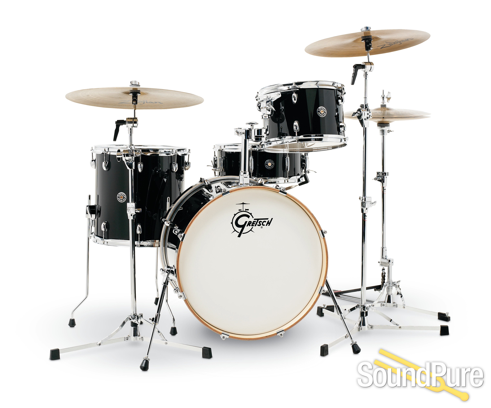

Барабаны
Барабаны - важная часть музыкального наследия Америки. Эти ударные инструменты прочно вписались в различные музыкальные традиции, от афроамериканских ритмов до латиноамериканских танцевальных мелодий. Барабаны несут в себе энергию и страсть, делая каждое музыкальное исполнение ярким и запоминающимся.
История барабанов в Америке тесно связана с разнообразием культур, которые внесли свой вклад в формирование уникального звучания этого инструмента. Афроамериканские барабаны, отражающие дух джаза, блюза и рока, стали неотъемлемой частью американской музыкальной сцены. От традиционных афроамериканских барабанов до современных ударных установок, барабаны служат не только ритмической основой, но и средством самовыражения для музыкантов.
В латиноамериканской музыке барабаны занимают центральное место, обогащая звучание сальсы, мамбо и других стилей. Разнообразие размеров, форм и материалов, используемых при создании латиноамериканских барабанов, создает уникальные звуковые характеристики, позволяя музыкантам создавать захватывающие и динамичные композиции.
Барабаны часто используются для передачи эмоций, рассказывая музыкальные истории и подчеркивая настроение произведения. От барабанов средневековой Африки до барабанов, используемых в бразильских самба-парадах, этот инструмент продолжает вдохновлять музыкантов и слушателей, делая музыкальный опыт насыщенным и разнообразным.